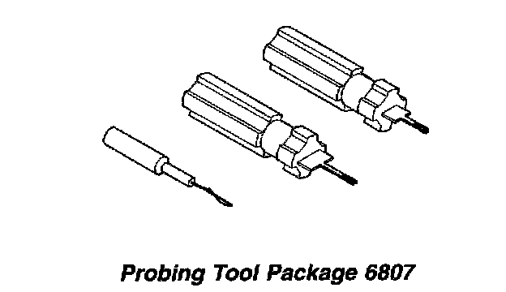
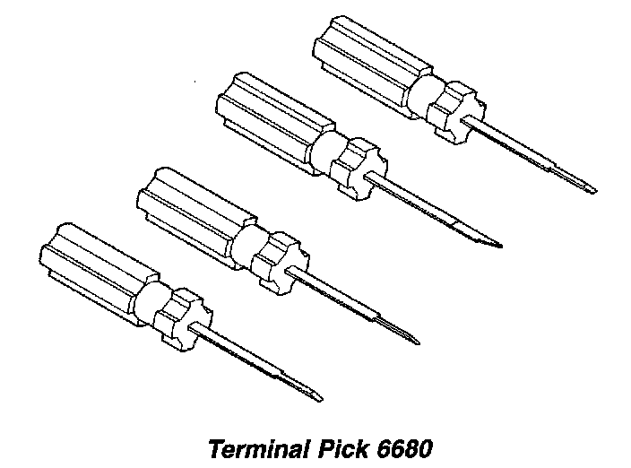
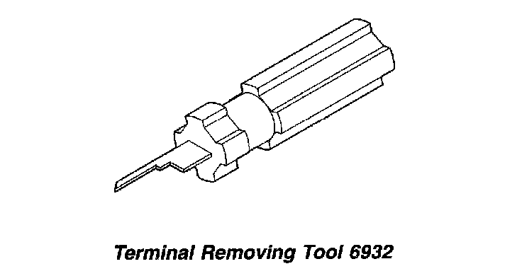
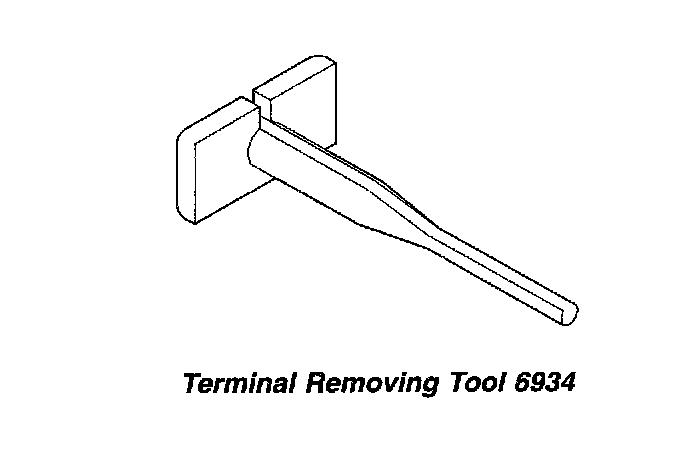

Operation CHARM
: Car repair manuals for everyone.
Русский
Home
>>
Jeep
>>
1997
>>
Grand Cherokee 4WD L6-4.0L VIN S
>>
Repair and Diagnosis
>>
Lighting and Horns
>>
Sensors and Switches - Lighting and Horns
>>
Door Switch
>>
Diagrams
>>
Diagram Information and Instructions
>>
Special Tools
Special Tools
Probing Tool Package 6807:

Terminal Pick 6680:

Terminal Removing Tool 6932:

Terminal Removing Tool 6934:
